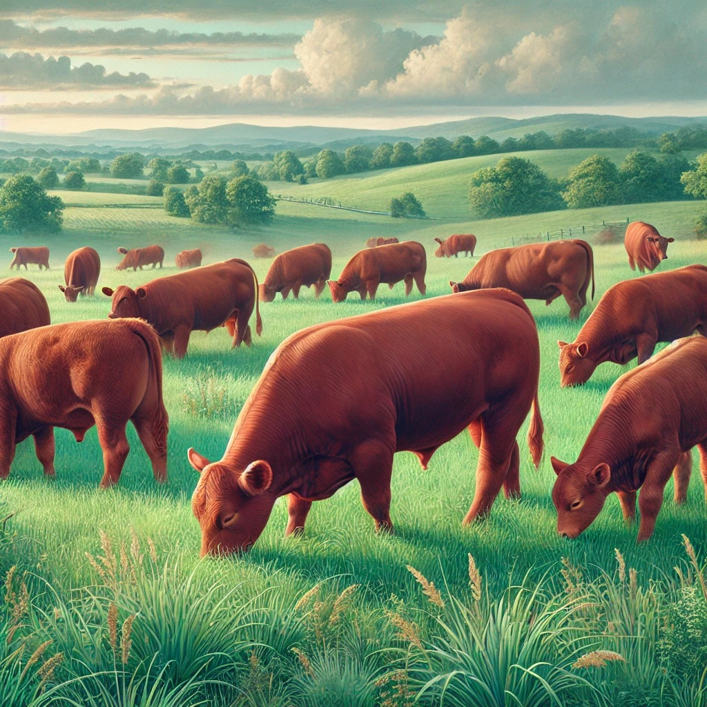

Obsessive Cow Disorder, or OCD, is a lighthearted term used to describe an intense admiration for cows. Whether it’s their gentle nature, iconic black-and-white patterns, or the simple joy of seeing them in a pasture, those with OCD find themselves drawn to all things bovine. This fascination often extends beyond just an appreciation—it can influence hobbies, décor choices, and even lifestyle decisions. While not a medical condition, OCD is a fun way for cow enthusiasts to embrace their passion and connect with others who share the same love for these incredible animals.
Having Obsessive Cow Disorder isn’t just about loving cows—it’s about passion, dedication, and the ability to find joy in the simple things. A strong enthusiasm for something, no matter how niche, is a sign of commitment and a willingness to dive deep into what brings happiness. People with OCD often share a sense of humor, creativity, and a strong sense of identity. In a world that can sometimes feel chaotic, having something to love and appreciate brings connection and positivity. Rather than seeing it as a quirky obsession, OCD should be celebrated as a unique strength that makes life more fun and meaningful.